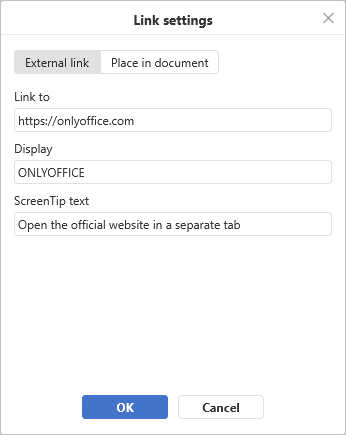
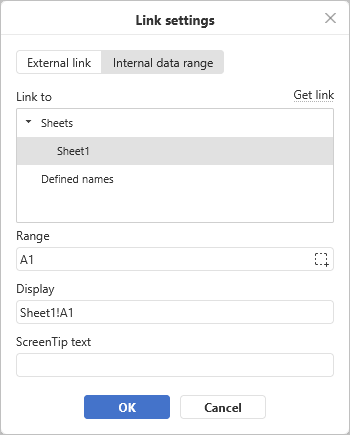

Add links
To add a link in the Spreadsheet Editor:
- Select the object that you want to display as a link, e.g., a cell, an image, or a group of objects.
- Switch to the Insert tab of the top toolbar.
- Click the Link icon on the top toolbar.
-
The Link settings window will appear where you can specify the link parameters:
-
Select the required link type:
Use the External Link option and enter a URL in the
http://www.example.comformat in the Link to field below if you need to add a link leading to an external website. If you need to add a link to a local file, enter the URL in thefile://path/Spreadsheet.xlsx(for Windows) orfile:///path/Spreadsheet.xlsx(for macOS and Linux) format in the Link to field.The
file://path/Spreadsheet.xlsxorfile:///path/Spreadsheet.xlsxlink type can be opened only in the desktop version of the editor. In the web editor, you can only add the link without being able to open it.
Use the Internal Data Range option, select a worksheet and a cell range in the fields below, or a previously added Named range if you need to add a link leading to a certain cell range in the same spreadsheet.
You can also generate an external link that will lead to a particular cell or a range of cells by clicking the Get Link button or using the Get link to this range option in the contextual right-click menu of the required cell range. The Get link to this range option is also available in the viewing mode.

-
Display — enter a text that will become clickable and lead to the web address specified in the upper field.
If the selected cell already contains data, it will be automatically displayed in this field.
- ScreenTip Text — enter a text that will become visible in a small pop-up window with a brief note or label connected to the link.
-
Select the required link type:
- Click the OK button.
To add a link, you can also use the Ctrl+K key combination or click the position where the link should be added with the right mouse button and select the Link option in the right-click menu.
When you hover the cursor over the added link, the ScreenTip will appear. To follow the link, click the link in the spreadsheet. To select a cell that contains a link without opening the link, click and hold the mouse button.
To delete the added link, select the cell containing the added link and press the Delete key, or right-click the cell and select the Clear All option from the drop-down list.